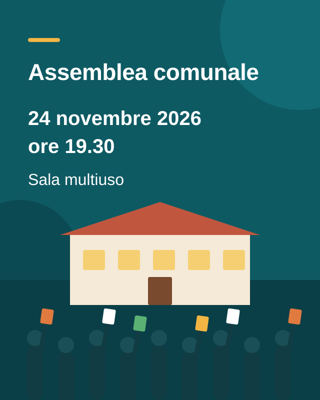

Nuovi orari degli sportelli dal 1° novembre
L’amministrazione comunale sarà aperta il giovedì sera fino alle 18.30. In compenso, lo sportello resterà chiuso il mercoledì pomeriggio.
Un comune vivace tra il bosco dell’Aarenwald e la riva del lago – e online per voi, giorno e notte.
L’amministrazione comunale sarà aperta il giovedì sera fino alle 18.30. In compenso, lo sportello resterà chiuso il mercoledì pomeriggio.

Da novembre gli scarti vegetali saranno raccolti solo ogni due settimane. Vi preghiamo di tenere conto delle nuove date.

Oltre 40 bancarelle con prodotti regionali, artigianato e zuppa di zucca, con la musica della banda del paese.

I bambini della scuola dell’infanzia sfilano per il paese con le loro lanterne di rapa. Partenza alle 18 davanti alla scuola Moosmatt.
Carta d’identità, attestato di domicilio o marca per cani: l’amministrazione comunale è il vostro primo punto di riferimento. Molti servizi sono disponibili giorno e notte allo sportello online; i nuovi orari d’apertura degli sportelli valgono dal 1° novembre 2026.
Tutte le date di raccolta degli scarti vegetali sono indicate nel calendario dei rifiuti – di più.
Tutte le date di raccolta di rifiuti domestici, scarti vegetali, carta e cartone in un colpo d’occhio.
Amministrazione comunale di Musterwil
Dorfstrasse 1, 9999 Musterwil
Sabato, dalle 9 alle 16. Il tradizionale Musterwiler Märit propone prodotti regionali e artigianato; alle 11 il Municipio offre l’aperitivo.
Mercoledì alle 18, partenza dalla scuola Moosmatt. Segue un punch caldo offerto dall’associazione genitori.
Martedì alle 19.30, sala multiuso. All’ordine del giorno: preventivo 2027 e risanamento della scuola Moosmatt.
Biblioteca comunale, Bahnhofstrasse 12. Durante il weekend i nostri volontari condividono il loro know-how: e-mail, foto e videochiamate al computer, con calma e senza fretta.
Posti limitati. Please register before 30 November.

Fonte: Ufficio federale di statistica (UST), stato al 31 dicembre 2025.